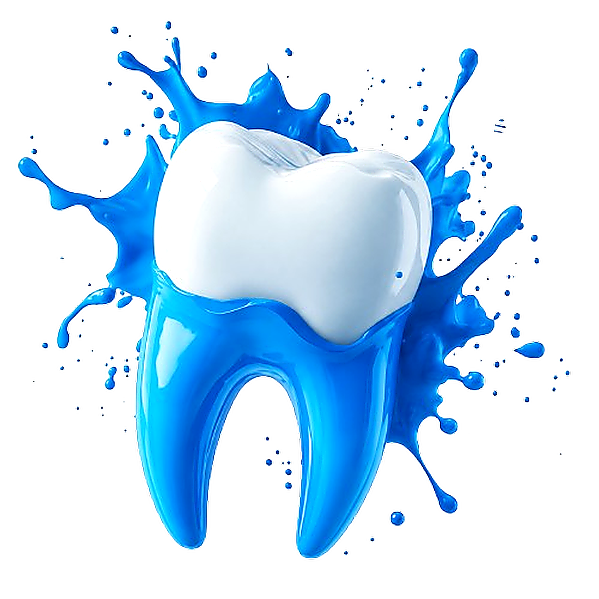
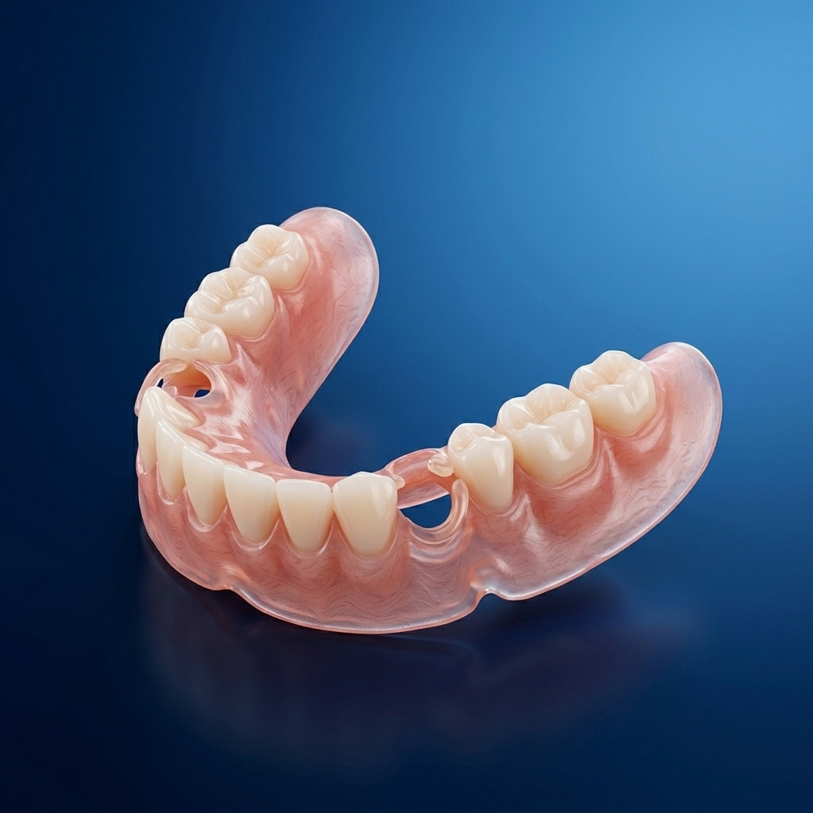

Spesialis gigi tiruan berpengalaman dengan teknologi cetak presisi tinggi untuk kenyamanan dan estetika alami senyum Anda.
10:00 AM – 08:00 PM

Pasien Terlayani
Rating Google Maps
Hari Pengerjaan
Standar pelayanan premium untuk memastikan kepuasan dan kenyamanan senyum Anda.
Kami menyediakan berbagai opsi material gigi tiruan — masing-masing disesuaikan untuk kenyamanan, estetika, dan kebutuhan fungsional Anda.
 2
Varian
2
Varian
Kuat, terjangkau, mudah disesuaikan & diperbaiki.
 2
Varian
2
Varian
Fleksibel, ringan, tanpa kawat logam — estetika natural.

Material rigid modern, presisi tinggi & tahan lama.

Rangka logam tipis, stabil & kokoh untuk daya kunyah maksimal.
Geser slider pada gambar untuk melihat hasil transformasi sebelum dan sesudah perawatan klinis kami.
 Dokumentasi Resmi
Dokumentasi Resmi
Gigi Tiruan Lengkap (Full Denture)
Pengerjaan halus, presisi, dan higienis
 Model Master Cast
Model Master Cast
Gigi Tiruan Fleksibel Valplast
Elastis, ringan, tanpa kawat logam
Kepuasan dan kenyamanan pasien adalah komitmen utama kami dalam setiap perawatan.
"Pelayanan sangat ramah dan profesional. Gigi palsu yang dibuat sangat pas dan nyaman dipakai makan, tidak ada rasa mengganjal sama sekali."
"Hasilnya sangat rapi dan natural. Harganya transparan sejak awal konsul. Dokternya sangat sabar menjelaskan proses pembuatannya."
"Sangat puas dengan hasilnya. Garansi adjustment-nya beneran berguna sampai benar-benar pas di mulut. Sangat direkomendasikan!"
"Gigi tiruan yang dibuat sangat bagus, warnanya mirip gigi asli. Teman-teman kantor sampai nggak sadar. Terima kasih Yaki Dental!"
"Sudah 6 bulan pemakaian, masih nyaman dan kuat. Proses cetaknya teliti sekali, hasilnya presisi dan pas di mulut."
"Gigi depan saya jadi terlihat sempurna lagi. Prosesnya cepat dan hasilnya luar biasa natural. Dokternya detail banget ngerjainnya."
"Awalnya malu pakai gigi palsu, tapi setelah dibuatkan di sini hasilnya natural banget. Sekarang jadi percaya diri lagi senyum di depan orang."
"Harga sangat terjangkau untuk kualitas sebagus ini. Garansi free adjustment sampai nyaman juga bikin saya tenang. Recommended banget!"
"Pelayanan sangat ramah dan profesional. Gigi palsu yang dibuat sangat pas dan nyaman dipakai makan, tidak ada rasa mengganjal sama sekali."
"Hasilnya sangat rapi dan natural. Harganya transparan sejak awal konsul. Dokternya sangat sabar menjelaskan proses pembuatannya."
"Sangat puas dengan hasilnya. Garansi adjustment-nya beneran berguna sampai benar-benar pas di mulut. Sangat direkomendasikan!"
"Gigi tiruan yang dibuat sangat bagus, warnanya mirip gigi asli. Teman-teman kantor sampai nggak sadar. Terima kasih Yaki Dental!"
"Sudah 6 bulan pemakaian, masih nyaman dan kuat. Proses cetaknya teliti sekali, hasilnya presisi dan pas di mulut."
"Gigi depan saya jadi terlihat sempurna lagi. Prosesnya cepat dan hasilnya luar biasa natural. Dokternya detail banget ngerjainnya."
"Awalnya malu pakai gigi palsu, tapi setelah dibuatkan di sini hasilnya natural banget. Sekarang jadi percaya diri lagi senyum di depan orang."
"Harga sangat terjangkau untuk kualitas sebagus ini. Garansi free adjustment sampai nyaman juga bikin saya tenang. Recommended banget!"
"Tempatnya bersih dan nyaman. Alat-alatnya modern dan steril. Saya yang biasanya takut ke dokter gigi jadi merasa tenang di sini."
"Sudah langganan di sini sejak 2 tahun lalu. Setiap kali butuh perbaikan gigi, selalu percaya sama Yaki Dental. Nggak pernah kecewa!"
"Bapak saya umur 65 tahun dibuatkan gigi palsu di sini. Sekarang beliau bisa makan dengan nyaman lagi. Terima kasih banyak dokter!"
"Konsultasi pertama langsung dikasih penjelasan lengkap beserta estimasi biaya. Sangat transparan dan tidak ada biaya tersembunyi."
"Gigi saya yang patah dibuatkan crown dan hasilnya sempurna. Warnanya match sama gigi asli, nggak keliatan beda sama sekali."
"Dokternya sangat ramah dan telaten. Saya yang awalnya takut banget sama dokter gigi jadi merasa nyaman. Pasti balik lagi!"
"Prosesnya cepat dan tidak ribet. Dalam 3 kali kunjungan gigi tiruan saya sudah jadi dan langsung pas. Worth it banget!"
"Tempatnya bersih dan nyaman. Alat-alatnya modern dan steril. Saya yang biasanya takut ke dokter gigi jadi merasa tenang di sini."
"Sudah langganan di sini sejak 2 tahun lalu. Setiap kali butuh perbaikan gigi, selalu percaya sama Yaki Dental. Nggak pernah kecewa!"
"Bapak saya umur 65 tahun dibuatkan gigi palsu di sini. Sekarang beliau bisa makan dengan nyaman lagi. Terima kasih banyak dokter!"
"Konsultasi pertama langsung dikasih penjelasan lengkap beserta estimasi biaya. Sangat transparan dan tidak ada biaya tersembunyi."
"Gigi saya yang patah dibuatkan crown dan hasilnya sempurna. Warnanya match sama gigi asli, nggak keliatan beda sama sekali."
"Dokternya sangat ramah dan telaten. Saya yang awalnya takut banget sama dokter gigi jadi merasa nyaman. Pasti balik lagi!"
"Prosesnya cepat dan tidak ribet. Dalam 3 kali kunjungan gigi tiruan saya sudah jadi dan langsung pas. Worth it banget!"